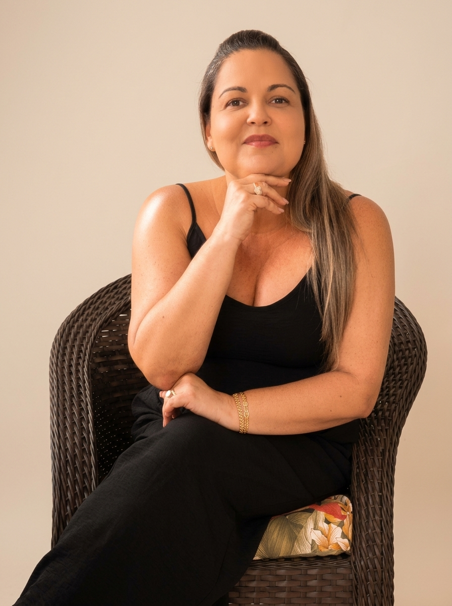
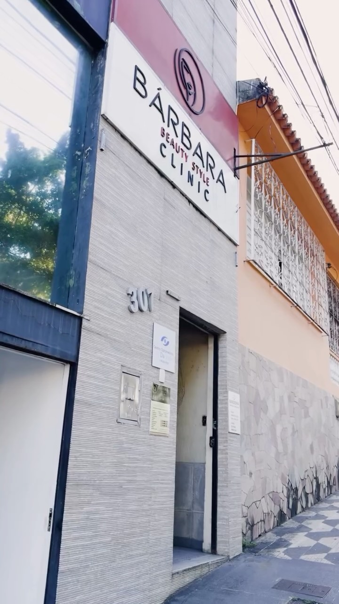

Eu cuido de você:
enfermagem especializada,
podologia e laserterapia
em Itabuna e região.
Cuidado humanizado e rigor técnico para o alívio seguro da dor, cicatrização acelerada e saúde preventiva dos seus pés. Atendimentos com hora marcada em consultório ou no conforto do seu lar.
Atendimento com pontualidade, biossegurança e discrição.
Toque no vídeo para pausar ou no alto-falante para ouvir o áudio original.
Cuidado humanizado guiado pela ciência
Sou Claudia Fontes, profissional com dupla formação como Enfermeira e Biomédica, especialista no cuidado avançado dos pés, podiatria clínica e regeneração de tecidos em Itabuna e região.
Uno o acolhimento humano da enfermagem à precisão diagnóstica da biomedicina. Essa abordagem integrada permite tratar a raiz do desconforto — inflamações, dores articulares e lesões de difícil cicatrização — com condutas seguras e sem trauma.
Com a Laserterapia Clínica e rigor estrito de biossegurança hospitalar, oferecemos procedimentos indolores e alívio rápido para que você retome sua rotina com total conforto.
Especialidades Clínicas
Tratamentos focados no alívio de desconfortos, recuperação tecidual e prevenção contínua.
Laserterapia Clínica
Alívio da Dor & Modulação Inflamatória
Aplicação de laser de baixa intensidade para controle direto de processos inflamatórios, dores articulares, fascite plantar, esporão e alívio de cefaleias tensionais. Estimula a regeneração celular de forma completamente indolor.
Podologia Clínica & Preventiva
Unhas, Calosidades & Pés Diabéticos
Tratamento técnico de unhas encravadas sem trauma, remoção criteriosa de calosidades e fissuras nos calcanhares. Cuidados específicos e preventivos para corredores, atletas e pacientes com pés diabéticos.
Tratamento de Lesões & Feridas
Curativos Especiais & Cicatrização
Avaliação detalhada da ferida e aplicação de curativos bioativos modernos associados ao estímulo do laser para fechar lesões de difícil cicatrização, úlceras e pós-operatórios com acompanhamento profissional.
Atendimento Domiciliar
Conforto & Biossegurança no seu Lar
Toda a estrutura clínica e aparelhos portáteis levados até o conforto da sua casa. Indicado para idosos, pessoas acamadas ou com mobilidade reduzida em Itabuna e municípios vizinhos.
Opções de Atendimento
Estrutura completa em consultório ou atendimento personalizado no conforto da sua residência.

Bárbara Beauty Style Clinic, 301
Consultório equipado com poltrona podológica de conforto anatômico, esterilização contínua e equipamentos de laserterapia de ponta para cuidar da sua saúde com tranquilidade em Itabuna/BA.
No Conforto do seu Lar
Atendimento em residências em Itabuna, Ilhéus e cidades vizinhas com maleta portátil completa, instrumentos esterilizados e paramentação de biossegurança total. Ideal para idosos e pós-operatórios.
Experiência de Pacientes
"A laserterapia com a Claudia atuou diretamente na regeneração tecidual, permitindo manter a constância nos meus treinos em alto nível sem dores articulares."
Vinícius Alcântara
Atleta Corredor • Itabuna
"O atendimento domiciliar para minha mãe idosa foi realizado com extrema delicadeza, higiene rigorosa e pontualidade. Trouxe alívio imediato no mesmo dia."
Helena Silveira
Atendimento Domiciliar • Família
"Procedimento em unha encravada sem nenhuma dor. O uso do laser e a técnica suave fizeram toda a diferença. Recomendo de olhos fechados."
Rodrigo Cardoso
Podologia Clínica • Itabuna
Informações sobre o Atendimento
Alívio, saúde e bem-estar para os seus pés
Entre em contato pelo WhatsApp para consultar horários disponíveis em consultório ou agendar uma visita no conforto da sua residência em Itabuna e região.